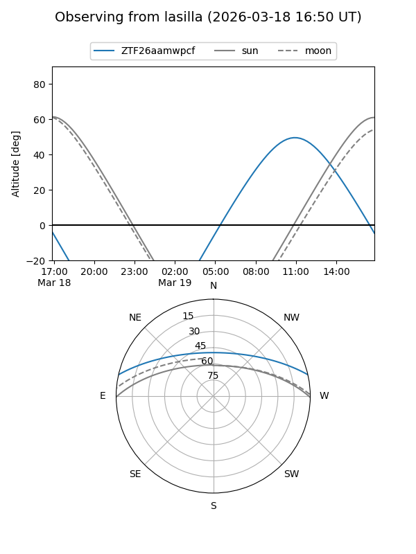
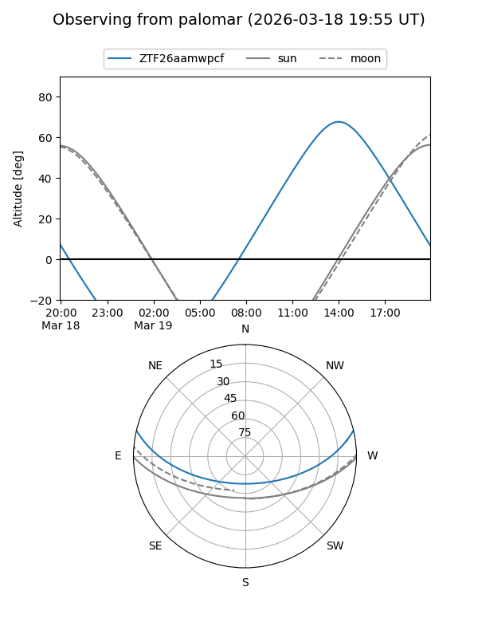

ZTF26aamwpcf
Target ZTF26aamwpcf at 2026-03-18 15:54
Aliases and brokers:
FINK: link
Lasair: link
ALeRCE: link
alt names
ZTF26aamwpcf (ztf,fink_ztf)
Coordinates:
equatorial (ra, dec) = 269.9033,+11.12038
equatorial (HMS+DMS) = 17:59:36.78,+11:07:13.38
galactic (l, b) = (37.1984,+16.48358)
Flags:
Photometry:
last ztfg=19.91
1 ztfg detections
Lightcurve
Visibility


Additional plots